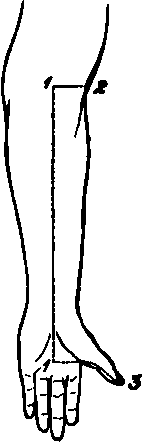

A Dissection To Expose The Flexor Longus Pollicis Manus Muscles
Description
This section is from the book "A Manual Of Dissections Of The Human Body", by R. E. Carrington. Also available from Amazon: A manual of dissections of the human body.
A Dissection To Expose The Flexor Longus Pollicis Manus Muscles
Position
The forearm supinated, the wrist and thumb extended.
I. Skin Incisions
1. Longitudinally along the median line, commencing above at the centre of the forearm opposite to the head of the Radius, and ending below at the middle of the palm of the hand on a level with the upper border of the abducted thumb.
No. 12.1
2. Transversely above from the upper end of No. 1 to the outer border of the forearm.
3. Transversely from the lower end of No. 1, along the inner border of the thumb to the tip.
1 The dotted line is carried a little too far upwards.
Reflect the flap outwards, and expose the superficial fascia containing—
1. Branches of the Princeps Pollicis artery on either side of the thumb.
2. The Radial vein along the outer border of the forearm.
3. The Median vein along the centre, with the deep communicating branch above.
4. The anterior branch of the External Cutaneous nerve along the outer border of the forearm.
5. Twigs from the anterior branch of the Internal cutaneous nerve.
6. The Cutaneous Palmar branch of the Median nerve in the middle line just above the Annular ligament and passing over it into the palm.
7. Digital branches of the Median nerve to either side of the thumb.
II
Remove the preceding structures, and expose the fascia lata. At the wrist this is seen to be strengthened by transverse fibres, and to constitute in that situation the Anterior Annular ligament,1 being attached internally to the Unciform and Pisiform bones, and externally to the Scaphoid and Os Trapezium. On the palm of the hand is seen the posterior part of the Palmar fascia, thick in the centre, but thin over the Thenar eminence.
III
Remove now the fascia lata, except that part forming the Anterior Annular ligament. Detach the lateral part of the Palmar fascia from the ball of the thumb. There will now be exposed—
1. The Extensor carpi radialis longior muscle most externally.
2. Internal to the preceding the Supinator longus muscle.
1 Only the outer part is uncovered.
3. Next the Pronator radii teres muscle.
4. Then the Flexor carpi radialis muscle.
5. Still more internally the Palmaris longus, its tendon passing over the Annular ligament, to be inserted into the Palmar fascia.
6. The outermost tendon of the Flexor sublimis digitorum will probably be seen at the lower part.
7. Forming the ball of the thumb are the following muscles: the Abductor pollicis, most superficial, running from the lower border of the Annular ligament to the outer side of the base of the proximal Phalanx. The Opponens muscle is beneath it, but a small portion is seen at its outer border. The outer head of the Flexor brevis pollicis is seen inserted, with the Abductor muscle, into the outer side of the base of the proximal Phalanx. The insertion of the Adductor and inner head of the Flexor brevis pollicis muscles is seen at the inner side of the base of the proximal Phalanx.
8. Some of the fleshy fibres of the Flexor longus pollicis muscle are seen between the tendons of the Supinator longus and Flexor carpi radialis muscles, and its tendon emerging from between the two heads of the Flexor brevis pollicis to its insertion into the ungual Phalanx of the thumb.
9. A small piece of the Pronator quadratus muscle internal to the Supinator longus tendon, on the lower two inches of the Radius. 10. The Radial artery is seen to be overlapped above by the Supinator longus, and to be superficial below between the tendon of that muscle and that of the Flexor carpi radialis longior. It is found to give off muscular offsets, and the Superficial Volar branch, over or between the muscles of the Thenar eminence, and to be accompanied by two venae comites.
11. The Radial nerve is seen to lie on the outer side of the artery as far as about three inches above the wrist.
12. A small piece of the Median nerve is seen just above the wrist, between the Flexor carpi radialis and outermost Flexor sublimis tendons.
IV
a. Remove the outer part of the Anterior Annular ligament, and take away the central thick portion of the Palmar fascia as far as it is exposed, having previously divided the insertion of the Palmaris longus muscle into it.
b. Remove the exposed portion of the Pronator radii teres muscle.
c. Cut through the Flexor carpi radialis above and below, and remove it. Its nerve from the Median will be divided.
d. Cut the Palmaris longus above and remove it. There will now be exposed—
1. The outer portion of the Flexor sublimis digitorum muscle, its origin from the oblique line and upper three fourths of the anterior border of the Radius ; its four tendons passing over the Carpal bones in pairs (the tendons of the middle and ring fingers being in front), and spreading out in the palm to the fingers. The two innermost are not seen.
2. A further portion of the Flexor longus pollicis muscle above the wrist.
3. The Pronator quadratus muscle more fully.
4. In the palm, the tendons of the Flexor profundus muscle1 beneath those of the Flexor sublimis, and the two outer Lumbricales muscles arising from the outer side of those going to the index and middle fingers. These tendons, as well as those of the superficial Flexor muscle, are surrounded by synovial membrane.
1 The two outermost only are seen.
5. The outer portion of the Superficial Palmar arch is seen, and just the commencement of the branch to the contiguous sides of the index and middle fingers.
6. The Median nerve is seen in the palm, somewhat enlarged and divided into two parts. The outer division supplies branches to the Abductor, Oppo-nens, and outer head of Flexor brevis pollicis muscles, and two Digital branches to the outer and inner borders of the thumb, and a single branch to the outer side of the index. This last branch is only seen at its origin. The commencement of the branch of the inner division, which divides for the contiguous sides of the index and middle fingers, also comes into view. The twigs to the exposed Lumbricales muscles from the two last-mentioned branches may be traced. The nerves here lie beneath the artery.
V
a. Divide now the outer division of the Median nerve, and the Superficial Palmar arch.
b. Clean away the synovial membrane from the Flexor tendons.
c. Divide the Flexor sublimis muscle longitudinally along its whole length. Cut through the index and middle tendons, and reflect the Radial origin of the muscle outwards. The Flexor longus pollicis muscle will now be fully exposed by opening up the Palmar sheath of its tendon ; and the occasional slip from the inner part of the Coronoid process of the Ulna may be traced. In addition there will be seen—
1. The outer part of the Flexor profundus digitorum muscle in the forearm.
2. The Median nerve in the forearm with its branches to the Flexor sublimis muscle.
Continue to:
- prev: A Dissection To Expose The Supinator Brevis Muscle
- Table of Contents
- next: A Dissection Of The Anterior Surface Of The Adductor Pollicis Manus Muscle